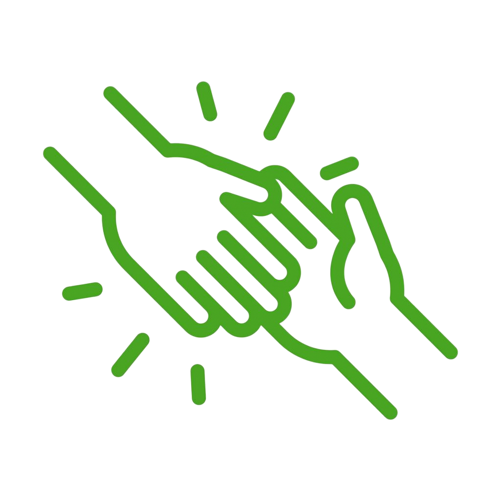
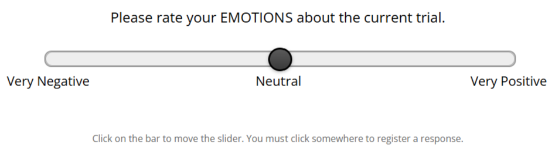

<!DOCTYPE html>
<html lang="en">
<head>
  <meta charset="utf-8" />
  <meta name="viewport" content="width=device-width, initial-scale=1.0"/>
  <title>Decision-Making and Emotions Study</title>

  <!-- jsPsych 8 core + plugins -->
  <script src="https://unpkg.com/jspsych@8.0.2"></script>
  <script src="https://unpkg.com/@jspsych/plugin-html-keyboard-response@2.0.0"></script>
  <script src="https://unpkg.com/@jspsych/plugin-html-button-response@2.0.0"></script>
<script src="https://unpkg.com/@jspsych/plugin-html-slider-response@2.0.0"></script>
<script src="https://unpkg.com/@jspsych/plugin-survey-text@2.0.0"></script>
<script src="https://unpkg.com/@jspsych/plugin-survey-multi-choice@2.0.0"></script>
<script src="https://unpkg.com/@jspsych/plugin-survey-multi-select@2.0.0"></script>
<script src="https://unpkg.com/@jspsych/plugin-instructions@2.0.0"></script>
<script src="https://unpkg.com/@jspsych/plugin-fullscreen@2.0.0"></script>
<link href="https://unpkg.com/jspsych@8.0.2/css/jspsych.css" rel="stylesheet"/>

  <style>
  body {
    padding: 0;
    margin: 0;
    overflow-x: hidden;
  }

  .instruction-text {
    font-size: 18px;
    line-height: 1.8;
    text-align: left;
    max-width: 900px;
    margin: 0 auto;
    padding: 20px;
  }

  .instruction-text h1,
  .instruction-text h2 {
    color: #2c3e50;
    margin-top: 20px;
  }

  .instruction-text h2,
  .instruction-text h3 {
    text-align: center;
  }

  .instruction-text ul,
  .instruction-text ol {
    margin: 12px 0 12px 24px;
  }

  .large-text {
    font-size: 22px;
    margin: 30px 20px;
  }

  .center {
    max-width: 900px;
    margin: 0 auto;
  }

  .muted {
    font-size: 14px;
    color: #666;
    margin-top: 15px;
  }

  .outcome-box {
    padding: 30px;
    border: 3px solid #333;
    border-radius: 10px;
    margin: 20px auto;
    max-width: 520px;
    font-size: 20px;
    font-weight: bold;
    text-align: center;
    min-height: 120px;
  }

  .help-outcome {
    background-color: #d4edda;
    border-color: #28a745;
  }

  .no-help-outcome {
    background-color: #f8d7da;
    border-color: #dc3545;
  }

  .typing-task {
    font-size: 18px;
    margin: 20px;
    padding: 20px;
    background-color: #e8e8e8;
    border: 2px solid #999;
    border-radius: 8px;
  }

  .benefactor-image {
    width: 120px;
    height: 120px;
    border-radius: 50%;
    margin: 20px auto 30px auto;
    display: block;
    border: 3px solid #333;
    object-fit: cover;
  }

  .outcome-image {
    width: 200px;
    height: auto;
    margin: 30px auto 20px auto;
    display: block;
  }

  .input-wrap {
    display: flex;
    gap: 10px;
    align-items: center;
    justify-content: center;
    margin-top: 10px;
    flex-wrap: wrap;
  }

  input[type="text"].ones-box {
    font-size: 24px;
    padding: 15px;
    width: 80px;
    text-align: center;
    border: 2px solid #ccc;
    border-radius: 8px;
  }

  .progress-bar-container {
    width: 400px;
    height: 30px;
    background-color: #e0e0e0;
    border: 2px solid #999;
    border-radius: 8px;
    margin: 20px auto;
    position: relative;
    overflow: hidden;
  }

  .progress-bar-fill {
    height: 100%;
    background-color: #4caf50;
    transition: width 0.3s ease;
  }

  .progress-text {
    text-align: center;
    margin-top: 10px;
    font-size: 16px;
    font-weight: bold;
  }

  /* ----- CONSISTENT SLIDER STYLES ----- */
  /* Fixed width for all sliders */
  .jspsych-slider {
    width: 800px !important;
    height: 24px !important;
    background: linear-gradient(to bottom, #e8e8e8, #d0d0d0);
    border-radius: 12px;
    cursor: pointer;
    border: 2px solid #999;
    box-shadow: inset 0 2px 4px rgba(0,0,0,0.1);
  }

  .jspsych-slider::-webkit-slider-thumb {
    -webkit-appearance: none;
    appearance: none;
    width: 40px;
    height: 40px;
    border-radius: 50%;
    background: linear-gradient(to bottom, #5a5a5a, #3a3a3a);
    border: 3px solid #000;
    cursor: pointer;
    box-shadow: 0 2px 6px rgba(0, 0, 0, 0.3);
    margin-top: -8px;
  }

  .jspsych-slider::-moz-range-thumb {
    width: 40px;
    height: 40px;
    border-radius: 50%;
    background: linear-gradient(to bottom, #5a5a5a, #3a3a3a);
    border: 3px solid #000;
    cursor: pointer;
    box-shadow: 0 2px 6px rgba(0, 0, 0, 0.3);
  }

  .jspsych-slider::-webkit-slider-runnable-track {
    width: 100%;
    height: 24px;
    cursor: pointer;
    border-radius: 12px;
  }

  .jspsych-slider::-moz-range-track {
    width: 100%;
    height: 24px;
    cursor: pointer;
    border-radius: 12px;
  }

  .slider-instruction {
    font-size: 16px;
    color: #666;
    margin-top: 35px;
    text-align: center;
  }

  .outcome-reminder {
    display: flex;
    align-items: center;
    justify-content: space-between;
    gap: 15px;
    font-size: 22px;
    font-weight: bold;
    padding: 15px 20px;
    background-color: #f5f5f5;
    border: 3px solid #999;
    border-radius: 8px;
    max-width: 520px;      
    min-height: 100px;     
    box-sizing: border-box; 
  }

  .outcome-reminder img {
    width: 80px;
    height: auto;
    flex-shrink: 0;
  }

  .outcome-reminder.help-border {
    border-color: #28a745;  
    color: #28a745;         
  }

  .outcome-reminder.no-help-border {
    border-color: #dc3545;  
    color: #dc3545;         
  }

  .break-screen {
    background-color: #f0f0f0;
    padding: 40px;
    border-radius: 10px;
    margin: 30px auto;
    max-width: 600px;
    line-height: 1.8;
  }

  .welcome-container {
    text-align: center;
    max-width: 700px;
    margin: 80px auto;
    padding: 40px;
  }

  .welcome-container h1 {
    font-size: 56px;
    color: #c62828;
    font-weight: bold;
    margin-bottom: 40px;
  }

  .welcome-container p {
    font-size: 18px;
    color: #333;
    line-height: 1.8;
    margin-bottom: 50px;
  }

  .fixation {
    font-size: 48px;
    text-align: center;
    margin: 100px auto;
  }

  .next-trial-message {
    font-size: 22px;
    text-align: center;
    margin: 100px auto;
    color: #555;
  }

  .slider-question-title {
    font-size: 24px;
    font-weight: normal;
    text-align: center;
    margin-bottom: 16px;
  }

  /* Footer-style prompt: always in the same place, looks like text */
  .spacebar-instruction {
    position: fixed;
    left: 50%;
    bottom: 28px;
    transform: translateX(-50%);
    font-size: 15px;
    font-weight: 600;
    color: #444;
    background: transparent;
    border: 0;
    box-shadow: none;
    padding: 0;
    margin: 0;
    z-index: 999;
    text-align: center;
  }

  .jspsych-content {
    margin: 0 !important;
    padding: 0 !important;
  }
  #jspsych-content {
    max-height: none !important;
  }

  /* Hide button controls from instruction screens */
  .jspsych-instructions-nav {
    display: none !important;
  }
  
  /* Completely hide the Continue button on slider screens (use spacebar only) */
  .jspsych-html-slider-response .jspsych-btn,
  .jspsych-html-slider-response button.jspsych-btn {
    display: none !important;
    opacity: 0 !important;
    pointer-events: none !important;
    position: absolute !important;
    width: 0 !important;
    height: 0 !important;
    overflow: hidden !important;
  }
  
  /* Center the app evenly and leave a bit of room for the footer hint */
  .jspsych-content-wrapper {
    display: flex !important;
    align-items: center !important;
    justify-content: center !important;
    min-height: 100svh !important;
    padding: 48px 0 72px 0 !important;
    box-sizing: border-box !important;
  }

  /* --- UNIFIED SLIDER LAYOUT FOR ALL TYPES --- */
  /* Slider page specific layout */
  .jspsych-html-slider-response {
    --slider-y-position: 50%;  /* Position from the top of the viewport */
  }
  
  .jspsych-html-slider-response .jspsych-content-wrapper {
    padding: 0 !important;
    min-height: 100vh !important;
    position: relative !important;
  }
  
  /* The main layout container */
  .jspsych-html-slider-response .jspsych-content {
    position: absolute !important;
    top: 0 !important;
    left: 0 !important; 
    width: 100% !important;
    height: 100vh !important;
    display: flex !important;
    flex-direction: column !important;
    align-items: center !important;
    justify-content: center !important;
  }
  
  /* Standardize the stimulus/header area */
  .jspsych-html-slider-response .jspsych-html-slider-response-stimulus {
    width: 100% !important;
    max-width: 900px !important;
    text-align: center !important;
    margin-bottom: 40px !important;
  }
  
  /* Fixed header height to ensure consistent slider position */
  .jspsych-html-slider-response .jspsych-html-slider-response-stimulus .large-text {
    min-height: 280px !important; 
    display: flex !important;
    flex-direction: column !important;
    align-items: center !important;
    justify-content: center !important;
    margin: 0 auto !important;
  }
  
  /* Slider container positioning */
  .jspsych-html-slider-response .jspsych-html-slider-response-container {
    width: 800px !important;
    text-align: center !important;
    margin: 0 auto !important;
  }
  
  /* Labels positioning */
  .jspsych-html-slider-response .jspsych-html-slider-response-labels {
    width: 800px !important;
    display: flex !important;
    justify-content: space-between !important;
    margin: 10px auto 0 auto !important;
  }
  
  /* Prompt positioning */
  .jspsych-html-slider-response .jspsych-html-slider-response-prompt {
    margin: 16px 0 0 0 !important;
    text-align: center !important;
  }

  /* Make sure all sliders start at the same vertical position */
  .slider-container-wrapper {
    position: fixed !important;
    top: calc(var(--slider-y-position) - 40px) !important;
    left: 50% !important;
    transform: translateX(-50%) !important;
    width: 800px !important;
    z-index: 10 !important;
  }

  /* Ensure the outcome reminder has a fixed size to prevent it from 
     affecting the position of the slider */
  .outcome-reminder-wrapper {
    height: 100px !important;
    width: 520px !important; 
    margin: 0 auto 20px auto !important;
    display: flex !important;
    align-items: center !important;
    justify-content: center !important;
  }
  
  /* Create a placeholder for the header content to ensure consistent spacing */
  .header-placeholder {
    height: 280px !important; 
    width: 100% !important;
    display: flex !important;
    flex-direction: column !important;
    align-items: center !important;
    justify-content: center !important;
    gap: 20px !important;
  }

  /* Adjust prompt spacing */
  .jspsych-html-slider-response .slider-instruction {
    margin: 20px auto 0 auto !important;
  }

  /* Match label spacing */
  .jspsych-html-slider-response-labels {
    display: flex !important;
    justify-content: space-between !important;
  }

  /* New benefactor introduction screen styles */
  .benefactor-intro-container {
    text-align: center;
    display: flex;
    flex-direction: column;
    align-items: center;
    justify-content: center;
    max-width: 800px;
    margin: 0 auto;
    padding: 40px;
    min-height: 60vh;
  }
  
  .benefactor-intro-container h2 {
    font-size: 28px;
    margin-bottom: 30px;
    width: 100%;
    text-align: center;
  }
  
  .benefactor-intro-container .benefactor-image {
    margin: 20px auto 30px auto;
  }
  
  .benefactor-intro-container p {
    font-size: 22px;
    line-height: 1.6;
    margin: 15px 0;
    text-align: center;
    width: 100%;
  }

  /* Fix for expectation trial spacing */
  .expectation-container {
    display: flex !important;
    flex-direction: column !important;
    align-items: center !important;
    justify-content: center !important;
    gap: 20px !important;
  }

  .expectation-container h2 {
    margin: 0 0 5px 0 !important;
    font-size: 24px !important;
  }

  .expectation-container .benefactor-image {
    margin: 10px auto !important;
    width: 120px !important;
    height: 120px !important;
  }

  .expectation-container .slider-question-title {
    margin: 10px 0 20px 0 !important;
  }
  </style>
</head>
<body></body>
<script>
const jsPsych = initJsPsych({
  on_finish: () => {
    // Automatically download all data as a CSV file
    jsPsych.data.get().localSave('csv', 'decision_emotion_study_data.csv');
  }
});
const fullscreen_trial = {
  type: jsPsychFullscreen,
  fullscreen_mode: true,
  message: '<p>The experiment will switch to full screen mode when you press SPACEBAR or the button below.</p>',
  button_label: 'Press SPACEBAR or click here to begin',
  on_load: function () {
    function spaceHandler(e) {
      if (e.code === 'Space') {
        e.preventDefault();
        const btn = document.querySelector('.jspsych-btn');
        if (btn) {
          btn.click();
          document.removeEventListener('keydown', spaceHandler);
        }
      }
    }
    document.addEventListener('keydown', spaceHandler);
  }
};
  const help_probabilities = [0.30, 0.50, 0.70];
  const shuffled_probs = help_probabilities.sort(() => Math.random() - 0.5);
  
  const benefactors = [
    { id: 1, name: "D.J.", help_prob: shuffled_probs[0], image: "Benefactor B.png" },
    { id: 2, name: "M.J.", help_prob: shuffled_probs[1], image: "Benefactor C.png" },
    { id: 3, name: "R.W.", help_prob: shuffled_probs[2], image: "Benefactor D.png" }
  ];
  
  const shuffled_benefactors = benefactors.sort(() => Math.random() - 0.5);
  const practice_benefactor = { id: 0, name: "Z.I.", help_prob: 0.50, image: "Benefactor A.png" };
  const trials_per_benefactor = 23;
  const pre_rating_trial_probability = 0.25;  // Probability of pre-ratings appearing in the main task
  // Helper variables to store self-describe text between on_load and on_finish
  let lastGenderSelfDescribe = '';
  let lastRaceOtherText = '';

//Demographics introduction 
const demographics_intro = {
  type: jsPsychHtmlKeyboardResponse,
  stimulus: `
    <div class="instruction-text" style="text-align:center; max-width:800px; margin:0 auto;">
      <h2 style="margin-bottom:20px;">Demographics</h2>
      <p style="font-size:18px; line-height:1.6;">
        You are almost done with the task. Please just answer a few brief questions about yourself.
      </p>
      <p style="font-size:18px; line-height:1.6;">
        Your responses are confidential and will only be used to describe the overall study sample.
      </p>
      <p style="font-size:18px; line-height:1.6;">
        You may skip any question by pressing the SPACEBAR to continue.
      </p>
    </div>
    <div class="spacebar-instruction">Press SPACEBAR to continue</div>
  `,
  choices: [' '],
  data: { trial_type: 'demographics_intro' }
};

// Age question 
const demographics_age = {
  type: jsPsychHtmlKeyboardResponse,
stimulus: `
  <div class="instruction-text" style="text-align:center; max-width:800px; margin:0 auto;">
    <div style="margin-top:60px;">
      <label style="font-size:20px;">
        What is your age?<br>
        <span style="font-size:16px; color:#555;">
          Enter your age in numbers in the text box below
        </span><br>
        <input
          id="age-input"
          type="text"
          style="
            margin-top:14px;
            padding:8px 12px;
            font-size:18px;
            width:160px;
            text-align:center;
            border: 1.5px solid #bbb;
            border-radius: 6px;
            outline: none;
            box-shadow: none;
          "
        >
      </label>
    </div>
  </div>
  <div class="spacebar-instruction">Press SPACEBAR to continue</div>
`,
  choices: "NO_KEYS",
  data: { trial_type: 'demographics_age' },
 on_load: function () {
  const input = document.getElementById('age-input');
  if (input) input.focus();

  const guardMs = 400;          // ignore spacebar for the first 400ms
  const t0 = performance.now(); // time when trial loaded

  function spaceHandler(e) {
    if (e.code === 'Space') {
      e.preventDefault();

      // Don't let a "held" spacebar from the previous screen skip this trial
      if (performance.now() - t0 < guardMs) {
        return;
      }

      jsPsych.finishTrial({
        age: input ? input.value : ''
      });
      document.removeEventListener('keydown', spaceHandler);
    }
  }
  document.addEventListener('keydown', spaceHandler);
}
};
const demographics_gender = {
  type: jsPsychSurveyMultiChoice,
  preamble:
    '<div class="instruction-text" style="text-align:center;"></div>' +
    '<div class="spacebar-instruction">Press SPACEBAR to continue</div>',
  questions: [
    {
      prompt:
        'What is your gender?<br>' +
        '<span style="font-size:14px; color:#666;">Please select one option.</span>' +
        '<span style="font-size:14px; color:#666;"> If you choose "Self-describe", please type in the text box next to that option.</span>',
      name: 'gender',
      options: [
        'Woman',
        'Man',
        'Non-binary',
        'Prefer not to say',
        'Self-describe'
      ],
      required: false
    }
  ],
  data: { trial_type: 'demographics' },
  on_load: function () {
    // --- put textbox inline with "Self-describe" option ---
    const labels = document.querySelectorAll('.jspsych-survey-multi-choice-text');
    let selfLabel = null;
    labels.forEach(l => {
      if (l.textContent.trim().startsWith('Self-describe')) {
        selfLabel = l;
      }
    });

    if (selfLabel) {
      const input = document.createElement('input');
      input.type = 'text';
      input.id = 'gender_self_describe';
      input.name = 'gender_self_describe';
      input.style.marginLeft = '8px';
      input.style.width = '220px';
      selfLabel.appendChild(input);
    }

    const textField = document.querySelector('#gender_self_describe');

    function spaceHandler(e) {
      if (e.code === 'Space') {
        e.preventDefault();
        if (textField) {
          lastGenderSelfDescribe = textField.value;
        }
        const btn = document.querySelector('.jspsych-btn');
        if (btn) {
          btn.click();
          document.removeEventListener('keydown', spaceHandler);
        }
      }
    }
    document.addEventListener('keydown', spaceHandler);
  },
  on_finish: function(data) {
    data.gender_self_describe = lastGenderSelfDescribe || '';
  }
};
const demographics_race = {
  type: jsPsychSurveyMultiChoice,
  preamble:
    '<div class="instruction-text" style="text-align:center;"></div>' +
    '<div class="spacebar-instruction">Press SPACEBAR to continue</div>',
  questions: [
    {
      prompt:
        'How would you describe your race or ethnicity?<br>' +
        '<span style="font-size:14px; color:#666;">Please select one option.</span>' +
        '<span style="font-size:14px; color:#666;"> If you choose "Other", please type in the text box next to that option.</span>',
      name: 'race_ethnicity',
      options: [
        'White / Caucasian',
        'Black or African American',
        'Hispanic or Latino/a/x',
        'Asian / Asian American',
        'Native American / Alaska Native',
        'Native Hawaiian or Pacific Islander',
        'Middle Eastern or North African',
        'Prefer not to say',
        'Other'
      ],
      required: false
    }
  ],
  data: { trial_type: 'demographics' },
  on_load: function () {
    // --- put textbox inline with "Other" option ---
    const labels = document.querySelectorAll('.jspsych-survey-multi-choice-text');
    let otherLabel = null;
    labels.forEach(l => {
      if (l.textContent.trim().startsWith('Other')) {
        otherLabel = l;
      }
    });

    if (otherLabel) {
      const input = document.createElement('input');
      input.type = 'text';
      input.id = 'race_other_text';
      input.name = 'race_other_text';
      input.style.marginLeft = '8px';
      input.style.width = '220px';
      otherLabel.appendChild(input);
    }

    const textField = document.querySelector('#race_other_text');

    function spaceHandler(e) {
      if (e.code === 'Space') {
        e.preventDefault();
        if (textField) {
          lastRaceOtherText = textField.value;
        }
        const btn = document.querySelector('.jspsych-btn');
        if (btn) {
          btn.click();
          document.removeEventListener('keydown', spaceHandler);
        }
      }
    }
    document.addEventListener('keydown', spaceHandler);
  },
  on_finish: function(data) {
    data.race_other_text = lastRaceOtherText || '';
  }
};
    // Fixation screen between trials
  function fixation_screen() {
    return {
      type: jsPsychHtmlKeyboardResponse,
      stimulus: '<div class="next-trial-message">Next trial starting...</div>',
      choices: "NO_KEYS",
      trial_duration: 1000,
      data: { trial_type: 'fixation' }
    };
  }

  // Expectation rating trial
  function expectation_trial(benefactor, trial_num, is_practice=false) {
    return {
      type: jsPsychHtmlSliderResponse,
      stimulus: `
        <div class="expectation-container">
          <h2>${benefactor.name}</h2>
          
          <p class="slider-question-title">How likely is ${benefactor.name} to help you on this trial?</p>
        </div>
        <div class="spacebar-instruction">Press SPACEBAR to continue</div>`,
      labels: [
        '<span style="font-size:18px;">0%</span><br><span style="font-size:16px;">Definitely will not help</span>',
        '<span style="font-size:18px;">10%</span>',
        '<span style="font-size:18px;">20%</span>',
        '<span style="font-size:18px;">30%</span>',
        '<span style="font-size:18px;">40%</span>',
        '<span style="font-size:18px;">50%</span>',
        '<span style="font-size:18px;">60%</span>',
        '<span style="font-size:18px;">70%</span>',
        '<span style="font-size:18px;">80%</span>',
        '<span style="font-size:18px;">90%</span>',
        '<span style="font-size:18px;">100%</span><br><span style="font-size:16px;">Definitely will help</span>'
      ],
      min: 0,
      max: 100,
      slider_start: 50,
      slider_width: 800,
      require_movement: true,
      button_label: 'Continue',
      prompt: '<p class="slider-instruction">Click on the bar to move the slider. You must click somewhere to register a response.</p>',
      data: {
        trial_type: 'expectation',
        benefactor_id: benefactor.id,
        benefactor_name: benefactor.name,
        help_probability: benefactor.help_prob,
        trial_number: trial_num,
        is_practice
      },
      on_load: function() {
        // Create a wrapper for the slider container to position it consistently
        const sliderContainer = document.querySelector('.jspsych-html-slider-response-container');
        if (sliderContainer) {
          const wrapper = document.createElement('div');
          wrapper.className = 'slider-container-wrapper';
          sliderContainer.parentNode.insertBefore(wrapper, sliderContainer);
          wrapper.appendChild(sliderContainer);
        }

        const slider = document.querySelector('.jspsych-slider');
        if (!slider) return;

        const start = Number(slider.value);
        let moved = false;

        const markMoved = () => {
          if (Number(slider.value) !== start) moved = true;
        };
        slider.addEventListener('input', markMoved);
        slider.addEventListener('change', markMoved);

        document.addEventListener('keydown', function spaceHandler(e) {
          if (e.code === 'Space') {
            if (!moved) {
              e.preventDefault();
              return;
            }
            e.preventDefault();
            const btn = document.querySelector('.jspsych-btn');
            if (btn && !btn.disabled) {
              btn.click();
              document.removeEventListener('keydown', spaceHandler);
            }
          }
        });
      }
    };
  }

  // Outcome screen
  function outcome_screen(benefactor, outcome01, is_practice=false) {
    const helped = outcome01 === 1;
    return {
      type: jsPsychHtmlKeyboardResponse,
      stimulus: `
        <div style="min-height: 500px; display: flex; flex-direction: column; justify-content: center; align-items: center;">
          
          <div class="outcome-box ${helped ? 'help-outcome' : 'no-help-outcome'}">
            <p>${benefactor.name} chose to ${helped ? 'HELP' : 'NOT HELP'} you.</p>
            ${helped
              ? '<p>They completed the typing task for you.</p>'
              : '<p>You will need to complete the typing task yourself next.</p>'}
          </div>
          <p class="slider-instruction" id="continue-message" style="visibility:hidden; margin-top:20px;">Press SPACEBAR to continue</p>
        </div>
      `,
      choices: [' '],
      trial_duration: null,
      data: {
        trial_type: 'outcome',
        benefactor_id: benefactor.id,
        benefactor_name: benefactor.name,
        help_probability: benefactor.help_prob,
        outcome: outcome01,
        is_practice
      },
      on_load: function() {
        setTimeout(() => {
          const msg = document.getElementById('continue-message');
          if (msg) msg.style.visibility = 'visible';
        }, 1000);
      },
      on_finish: function(data){
        const prev = jsPsych.data.get().filter({trial_type:'expectation'}).last(1).values()[0];
        if (prev) data.expectation = prev.response;
      }
    };
  }

// Typing task
function typing_task(is_practice=false) {
  return {
    type: jsPsychHtmlKeyboardResponse,
    stimulus: `
      <div class="typing-task center">
        <h2>Typing Task</h2>
        <p>Type <strong>1</strong> and press <strong>SPACEBAR</strong> to submit.</p>
        <p class="muted">Repeat 20 times.</p>
        <div class="input-wrap">
          <input type="text" class="ones-box" id="ones-box" maxlength="1"
                 autocomplete="off" autocapitalize="off" spellcheck="false" />
        </div>
        <div class="progress-bar-container">
          <div class="progress-bar-fill" id="progress-fill" style="width:0%"></div>
        </div>
        <div class="progress-text" id="progress-text">Progress: 0 / 20</div>
      </div>
    `,
    choices: "NO_KEYS",
    data: { trial_type: 'typing_task', is_practice },
    on_load: () => {
      const input = document.getElementById('ones-box');
      const progressFill = document.getElementById('progress-fill');
      const progressText = document.getElementById('progress-text');
      let count = 0;
      const target = 20;
      let canSubmit = true;

      input.focus();
      input.addEventListener('paste', e => e.preventDefault());

      const handleKey = (e) => {
        if (e.key === ' ' && input.value === '1' && canSubmit) {
          e.preventDefault();
          canSubmit = false;
          
          count++;
          const percent = (count / target) * 100;
          progressFill.style.width = percent + '%';
          progressText.textContent = `Progress: ${count} / ${target}`;
          input.value = '';
          
          if (count >= target) {
            input.removeEventListener('keydown', handleKey);
            input.blur(); // drop focus so keypresses don't stay trapped in the input
            setTimeout(() => {
              jsPsych.finishTrial({
                typing_completed: true,
                typing_count: count
              });
            }, 50); // let the final space keyup settle
          } else {
            setTimeout(() => {
              canSubmit = true;
              input.focus();
            }, 250);
          }
        }
      };

      input.addEventListener('keydown', handleKey);
      input.addEventListener('input', () => {
        if (input.value !== '1' && input.value !== '') {
          input.value = '';
        }
      });
    }
  };
}
// Emotion rating screen 
function emotion_rating(is_practice, received_help, timing, benefactor_name) {
  is_practice = (typeof is_practice !== 'undefined') ? is_practice : false;
  received_help = (typeof received_help !== 'undefined') ? received_help : null;
  timing = (typeof timing !== 'undefined') ? timing : 'post';
  benefactor_name = (typeof benefactor_name !== 'undefined') ? benefactor_name : null;

  // If we haven't seen the outcome yet, use an empty spacer
  let headerContent;
  if (received_help === null) {
    headerContent = `
      <div class="header-placeholder">
        <div style="height:100px; width:520px;"></div>
        <p class="slider-question-title">Please rate your EMOTIONS about the current trial.</p>
      </div>`;
  } else if (received_help) {
    headerContent = `
      <div class="header-placeholder">
        <div class="outcome-reminder-wrapper">
          <div class="outcome-reminder help-border">
            <span>${benefactor_name ? benefactor_name + ' ' : ''}chose to HELP you.</span>
            
          </div>
        </div>
        <p class="slider-question-title">Please rate your EMOTIONS about the current trial.</p>
      </div>`;
  } else {
    headerContent = `
      <div class="header-placeholder">
        <div class="outcome-reminder-wrapper">
          <div class="outcome-reminder no-help-border">
            <span>${benefactor_name ? benefactor_name + ' ' : ''}chose to NOT HELP you.</span>
            
          </div>
        </div>
        <p class="slider-question-title">Please rate your EMOTIONS about the current trial.</p>
      </div>`;
  }

  return {
    type: jsPsychHtmlSliderResponse,
    stimulus: headerContent + `<div class="spacebar-instruction">Press SPACEBAR to continue</div>`,
    labels: [
      '<span style="font-size:22px;">Very Negative</span>',
      '<span style="font-size:22px;">Neutral</span>',
      '<span style="font-size:22px;">Very Positive</span>'
    ],
    min: -100,
    max: 100,
    slider_start: 0,
    slider_width: 800,
    require_movement: true,
    button_label: 'Continue',
    prompt: '<p class="slider-instruction">Click on the bar to move the slider. You must click somewhere to register a response.</p>',
    data:{trial_type:'emotion_rating', is_practice, received_help, rating_timing: timing},
    on_load: function() {
      // Create a wrapper for the slider container to position it consistently
      const sliderContainer = document.querySelector('.jspsych-html-slider-response-container');
      if (sliderContainer) {
        const wrapper = document.createElement('div');
        wrapper.className = 'slider-container-wrapper';
        sliderContainer.parentNode.insertBefore(wrapper, sliderContainer);
        wrapper.appendChild(sliderContainer);
      }

      const slider = document.querySelector('.jspsych-slider');
      if (!slider) return;

      const start = Number(slider.value);
      let moved = false;

      const markMoved = () => {
        if (Number(slider.value) !== start) moved = true;
      };
      slider.addEventListener('input', markMoved);
      slider.addEventListener('change', markMoved);

      document.addEventListener('keydown', function spaceHandler(e) {
        if (e.code === 'Space') {
          if (!moved) { e.preventDefault(); return; }
          e.preventDefault();
          const btn = document.querySelector('.jspsych-btn');
          if (btn && !btn.disabled) {
            btn.click();
            document.removeEventListener('keydown', spaceHandler);
          }
        }
      });
    }
  };
}

// Evaluation rating screen 
function evaluation_rating(is_practice, received_help, timing, benefactor_name){
  is_practice = (typeof is_practice !== 'undefined') ? is_practice : false;
  received_help = (typeof received_help !== 'undefined') ? received_help : null;
  timing = (typeof timing !== 'undefined') ? timing : 'post';
  benefactor_name = (typeof benefactor_name !== 'undefined') ? benefactor_name : null;

  let headerContent;
  if (received_help === null) {
    headerContent = `
      <div class="header-placeholder">
        <div style="height:100px; width:520px;"></div>
        <p class="slider-question-title">Please rate your EVALUATION of the current trial.</p>
      </div>`;
  } else if (received_help) {
    headerContent = `
      <div class="header-placeholder">
        <div class="outcome-reminder-wrapper">
          <div class="outcome-reminder help-border">
            <span>${benefactor_name ? benefactor_name + ' ' : ''}chose to HELP you.</span>
            
          </div>
        </div>
        <p class="slider-question-title">Please rate your EVALUATION of the current trial.</p>
      </div>`;
  } else {
    headerContent = `
      <div class="header-placeholder">
        <div class="outcome-reminder-wrapper">
          <div class="outcome-reminder no-help-border">
            <span>${benefactor_name ? benefactor_name + ' ' : ''}chose to NOT HELP you.</span>
            
          </div>
        </div>
        <p class="slider-question-title">Please rate your EVALUATION of the current trial.</p>
      </div>`;
  }

  return {
    type: jsPsychHtmlSliderResponse,
    stimulus: headerContent + `<div class="spacebar-instruction">Press SPACEBAR to continue</div>`,
    labels: [
      '<span style="font-size:22px;">Very Negative</span>',
      '<span style="font-size:22px;">Neutral</span>',
      '<span style="font-size:22px;">Very Positive</span>'
    ],
    min: -100,
    max: 100,
    slider_start: 0,
    slider_width: 800,
    require_movement: true,
    button_label: 'Continue',
    prompt: '<p class="slider-instruction">Click on the bar to move the slider. You must click somewhere to register a response.</p>',
    data: { trial_type: 'evaluation_rating', is_practice, received_help, rating_timing: timing },
    on_load: function() {
      // Create a wrapper for the slider container to position it consistently
      const sliderContainer = document.querySelector('.jspsych-html-slider-response-container');
      if (sliderContainer) {
        const wrapper = document.createElement('div');
        wrapper.className = 'slider-container-wrapper';
        sliderContainer.parentNode.insertBefore(wrapper, sliderContainer);
        wrapper.appendChild(sliderContainer);
      }

      const slider = document.querySelector('.jspsych-slider');
      if (!slider) return;

      const start = Number(slider.value);
      let moved = false;

      const markMoved = () => {
        if (Number(slider.value) !== start) moved = true;
      };
      slider.addEventListener('input', markMoved);
      slider.addEventListener('change', markMoved);

      document.addEventListener('keydown', function spaceHandler(e) {
        if (e.code === 'Space') {
          if (!moved) { e.preventDefault(); return; }
          e.preventDefault();
          const btn = document.querySelector('.jspsych-btn');
          if (btn && !btn.disabled) {
            btn.click();
            document.removeEventListener('keydown', spaceHandler);
          }
        }
      });
    }
  };
}
  /* BUILD ROUND — expectation -> (optional pre) -> outcome -> typing (if needed) -> post ratings */
  function build_round(
    benefactor,
    trial_num,
    is_practice = false,
    forced_outcome = null,
    include_emotion = true,
    include_evaluation = true,
    include_pre_ratings = false
  ) {
    const outcome = forced_outcome !== null
      ? forced_outcome
      : (is_practice ? 0 : (Math.random() < benefactor.help_prob ? 1 : 0));

    const seq = [];

    if (!is_practice) seq.push(fixation_screen());

    // 1. Expectation FIRST
    seq.push(expectation_trial(benefactor, trial_num, is_practice));

    // 2. PRE ratings AFTER expectation, BEFORE outcome
    if (include_pre_ratings) {
      seq.push(emotion_rating(is_practice, null, 'pre'));
      seq.push(evaluation_rating(is_practice, null, 'pre'));
    }

    // 3. Outcome
    seq.push(outcome_screen(benefactor, outcome, is_practice));

    // 4. Typing task if no help
    if (outcome === 0) seq.push(typing_task(is_practice));

    // 5. POST ratings
if (include_emotion) {
  seq.push(emotion_rating(is_practice, outcome === 1, 'post', benefactor.name));
}
if (include_evaluation) {
  seq.push(evaluation_rating(is_practice, outcome === 1, 'post', benefactor.name));
}

return seq;
}

  // Create a block of trials for a specific benefactor
  function benefactor_block(benefactor, is_practice = false, block_number = null) {
    const trials = [];

    if (!is_practice) {
      trials.push({
        type: jsPsychHtmlKeyboardResponse,
        stimulus: `
          <div class="benefactor-intro-container">
            <h2>You are about to start interacting with a new person.</h2>
            
            <p>You will now interact with <strong>${benefactor.name}</strong> for ${trials_per_benefactor} trials.</p>
            <p class="slider-instruction" style="margin-top:40px;">Press SPACEBAR to continue</p>
          </div>
          <div class="spacebar-instruction">Press SPACEBAR to continue</div>
        `,
        choices: [' '],
        data: {
          trial_type: 'benefactor_intro',
          benefactor_id: benefactor.id,
          benefactor_name: benefactor.name
        }
      });
    }

    const num_trials = is_practice ? 1 : trials_per_benefactor;
    for (let i = 0; i < num_trials; i++) {
      const include_pre = !is_practice && Math.random() < pre_rating_trial_probability;
      trials.push(...build_round(benefactor, i + 1, is_practice, null, true, true, include_pre));
    }

    if (!is_practice && block_number !== null && block_number < shuffled_benefactors.length) {
      trials.push({
        type: jsPsychHtmlKeyboardResponse,
        stimulus: `
          <div class="break-screen">
          <div class="break-screen" style="display:flex;flex-direction:column;justify-content:center;align-items:center;min-height:100vh;">
            <p>You can take a short break here if needed.</p>
            <p>When ready, press the spacebar to continue.</p>
          </div>`,
        choices: [' '],
        data: {trial_type: 'break'}
      });
    }

    return trials;
  }

 function instruction_screen(content) {
  return {
    type: jsPsychHtmlKeyboardResponse,
    stimulus: `
      <div class="instruction-text">
        ${content}
      </div>
      <div class="spacebar-instruction">Press SPACEBAR to continue</div>
    `,
    choices: "NO_KEYS",
    data: { trial_type: 'instruction' },
    on_load: function () {
      const guardMs = 400;  // ignore spacebar presses for 400ms
      const t0 = performance.now();

      function spaceHandler(e) {
        if (e.code === 'Space') {
          e.preventDefault();
          if (performance.now() - t0 < guardMs) return;
          document.removeEventListener('keydown', spaceHandler);
          jsPsych.finishTrial();
        }
      }
      document.addEventListener('keydown', spaceHandler);
    }
  };
}

  // Welcome screen
  const welcome_screen = instruction_screen(`
    <div class="welcome-container">
      <h1>Welcome</h1>
      <p>Thank you for participating in this study.</p>
    </div>
  `);

  // Introduction screen
  const introduction_screen = instruction_screen(`
    <p>Thank you for agreeing to take part in this study. This study explores people's impressions, feelings, and judgments when interacting with other people. There are no right or wrong answers at any point. We are interested only in your honest impressions and reactions throughout the task.</p>
    <p>This study will take about 25 minutes.</p> 
    <p>Before you begin, please remove any distractions: put away your phone, turn off music, and make sure you can focus for the full session without interruption.</p>
  `);

  // Overview screen
  const overview_screen = instruction_screen(`
    <h2>Overview of the Study</h2>
    <p>During this study you will complete a series of trials that involve interacting with another person. On each trial, the person could choose to help you or not to help you.</p>
    <p>The person's choices reflect the responses of a real participant who completed a previous version of this study.</p>
    <p>On a given trial, if the person chose to help you, that means they completed a small typing task for you (typing the number 1 twenty times), so that you do not have to do it.</p>
    <p>If they did not choose to help you, you will need to complete that typing task yourself for that trial.</p>
    <p>Your goal in this task is to form impressions of the people you interact with, based on their choices of whether to help you or not.</p>
  `);

  // How each trial works
const how_each_trial_works = instruction_screen(`
  <h2>How Each Trial Works</h2>
  <ol style="margin-bottom: 20px;">
    <li style="margin-bottom: 18px;"><strong>Expectation Rating:</strong> You will estimate how likely the person is to help you using a slider.</li>
    <li><strong>Outcome:</strong> You will then see what they decided. If they help, that means they completed a typing task for you. If they do not help, you will complete that typing task yourself.</li>
  </ol>
  <p>Let's try two short practice trials so you know what to expect.</p>
`);

  // Practice help intro
  const practice_help_intro = instruction_screen(`
    <h2>Practice Example: Help</h2>
    <p>For these practise trials, you will interact with Z.I.</p>
    <p>Each person you interact with will be identified by their initials throughout the study.</p>
    <p>First, try a practice trial where Z.I. helps you.</p>
  `);

  // Practice no-help intro
  const practice_nohelp_intro = instruction_screen(`
    <h2>Practice Example: No Help</h2>
    <p>Next, try a practice trial where Z.I. does not help.</p>
  `);

// Emotion and evaluation ratings instruction 
const emotion_eval_intro = instruction_screen(`
  <h2>Emotion and Evaluation Ratings</h2>
  <p>At the end of each trial, you will answer two questions about your reaction to that trial. These ratings focus on different aspects of your reaction:</p>
  <ul style="margin-top:15px; margin-bottom:20px;">
    <li style="margin-bottom:14px;">
      <strong>The emotion rating</strong> asks you to rate your emotions about that trial, from very positive to very negative (where positive emotions include, e.g., happiness, joy, gratitude, relief, while negative emotions include, e.g., disappointment, frustration, annoyance).
    </li>
    <li>
      <strong>The evaluation rating</strong> asks for your evaluation of that trial - how positive or negative you think it is (where positive evaluations include viewing it as, e.g., acceptable, pleasant, good, or beneficial, while negative evaluations include viewing it as, e.g., unacceptable, unpleasant, bad, or harmful).
    </li>
  </ul>
  <p><strong>Important:</strong> Please treat these ratings separately: your emotion and evaluation ratings could be the same, or they could be different. For example, someone could evaluate an outcome positively and feel positive emotions, negative emotions, or no emotions about it; similar applies to negative evaluations. In addition, please base your evaluation ratings on your subjective view in the moment, since the same objective situation might sometimes be evaluated positively, but at other times be evaluated as neutral or negative.</p>
`);
const slider_examples = {
  type: jsPsychHtmlKeyboardResponse,
  stimulus: `
    <div class="instruction-text" style="text-align:center; max-width:900px; margin:0 auto;">
      <p style="margin-bottom:40px;">
        Below are examples of the rating sliders. You do not need to click on them - these are just for illustration.
      </p>
      
      <div style="display:flex; justify-content:center; gap:60px; flex-wrap:wrap; align-items:flex-start;">
        <div style="text-align:center;">
          <h3>Emotion Rating (example)</h3>
          
        </div>
        <div style="text-align:center;">
          <h3>Evaluation Rating (example)</h3>
          
        </div>
      </div>
    </div>
  `,
  choices: [' ']
};

  // Additional note about pre- and post- ratings
const additional_prepost_explanation = instruction_screen(`
  <p>In addition to making these ratings at the end of each trial, on some trials you will also rate your emotions and evaluations <em>before</em> seeing the outcome, as well as after.</p>
  <p>For these additional ratings, simply rate your emotions and evaluations in response to the trial so far.</p>
`);

  // Practice with ratings
  const practice_with_ratings_intro = instruction_screen(`
    <p>Next you will do two practice trials, which include these emotion and evaluation ratings.</p>
    <p>At the end of the first trial, it will automatically move to the next one.</p>
  `);

  // Important notes before main task
  const important_notes = instruction_screen(`
    <ul>
      <li>You have completed the practice and are almost ready to begin the main task.</li>
      <li>Remember, your goal in this task is to form impressions of the people you interact with.</li>
      <li>You will interact with three different people. You will interact with each person for ${trials_per_benefactor} trials, before moving on to the next section, where you will interact with a new person. Feel free to take a short break between the sections if needed.</li>
    </ul>
    <p style="text-align:center; margin-top:32px; font-size:20px;"><strong>When you are ready, press the SPACEBAR to begin the main task.</strong></p>
  `);

// Debriefing screen
const debriefing_screen = instruction_screen(`
  <h1>Debriefing Form</h1>
  <h2>Thank you for participating in this study!</h2>
  <p>The study you just completed investigates how people's emotions and evaluations are shaped by their experiences with others - specifically, how we respond when outcomes meet or violate our expectations. We hypothesized that emotions would track whether outcomes were better or worse than expected, while evaluations would track whether outcomes (and perhaps expectations) were positive or negative.</p>
  <p>Please note that this study used deception: the people you interacted with in this study were not in fact based on real people's responses, but instead the responses were fully computer generated.</p>
  <p>Please contact <strong>Dr. Thalia Vrantsidis</strong> if you have any questions about this research or your participation.<br>
  <strong>Email:</strong><a href="mailto:tv285@msstate.edu"> tv285@msstate.edu</a></p>

  <p style="margin-top:20px;">You should automatically receive credit upon exiting the task. If there are any issues with that, please contact Dr. Vrantsidis.</p>

  <p style="text-align:center; margin-top:32px; font-size:20px;">
    <strong>Press spacebar to exit the task and receive your credit.</strong>
  </p>
`);
  /* TIMELINE CONSTRUCTION */
  const timeline = [];
  
  // FIRST: go fullscreen
  timeline.push(fullscreen_trial);

  // Initial instruction screens - USE SPACEBAR ONLY
  timeline.push(welcome_screen);
  timeline.push(introduction_screen);
  timeline.push(overview_screen);
  
  // 1. How Each Trial Works
  timeline.push(how_each_trial_works);

  // 2. Practice Example: Help
  timeline.push(practice_help_intro);
  timeline.push(...build_round(practice_benefactor, 1, true, 1, false, false, false));

  // 3. Practice Example: No Help
  timeline.push(practice_nohelp_intro);
  timeline.push(...build_round(practice_benefactor, 2, true, 0, false, false, false));

  // 4. Emotion & Evaluation instruction - THIS MUST COME BEFORE SLIDER EXAMPLES
  timeline.push(emotion_eval_intro);
  
  // 5. Slider examples
  timeline.push(slider_examples);

  // 5a. Additional explanation of pre- and post- ratings
timeline.push(additional_prepost_explanation);

  // 6. Practice with Ratings
  timeline.push(practice_with_ratings_intro);
  
  // 7. Practice trial with post-ratings only (help trial)
  timeline.push(...build_round(practice_benefactor, 3, true, 1, true, true, false));
  
  // 9. Practice trial with pre and post ratings (help trial)
  timeline.push(...build_round(practice_benefactor, 4, true, 1, true, true, true));

  // 10. Important Notes before main task
  timeline.push(important_notes);

// Main task blocks - USE SPACEBAR FOR NAVIGATION
shuffled_benefactors.forEach((b, idx) => {
  timeline.push(...benefactor_block(b, false, idx + 1));
});

// Demographics first, then debriefing 
timeline.push(demographics_intro, demographics_age, demographics_gender, demographics_race);
timeline.push(debriefing_screen);
  jsPsych.run(timeline);
</script>
</html>
